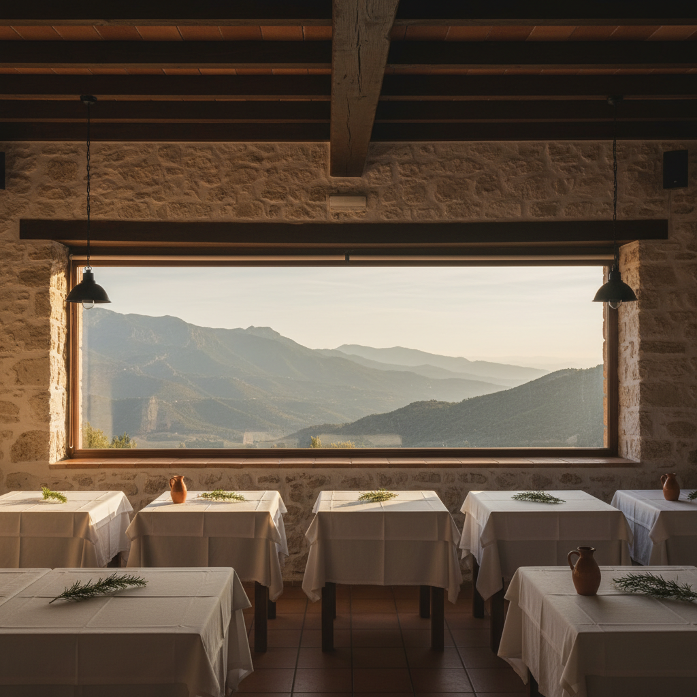
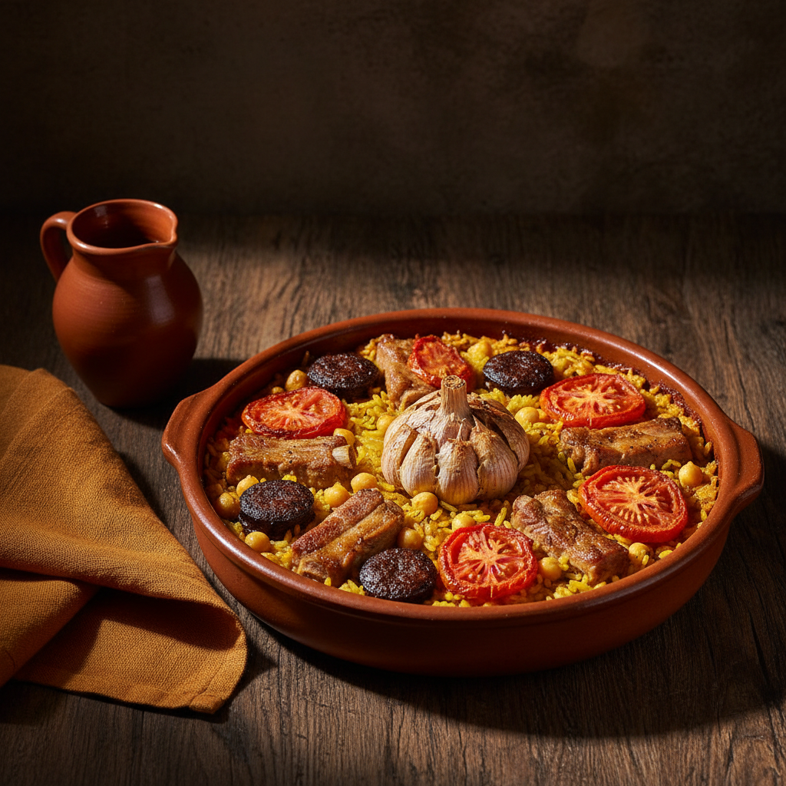
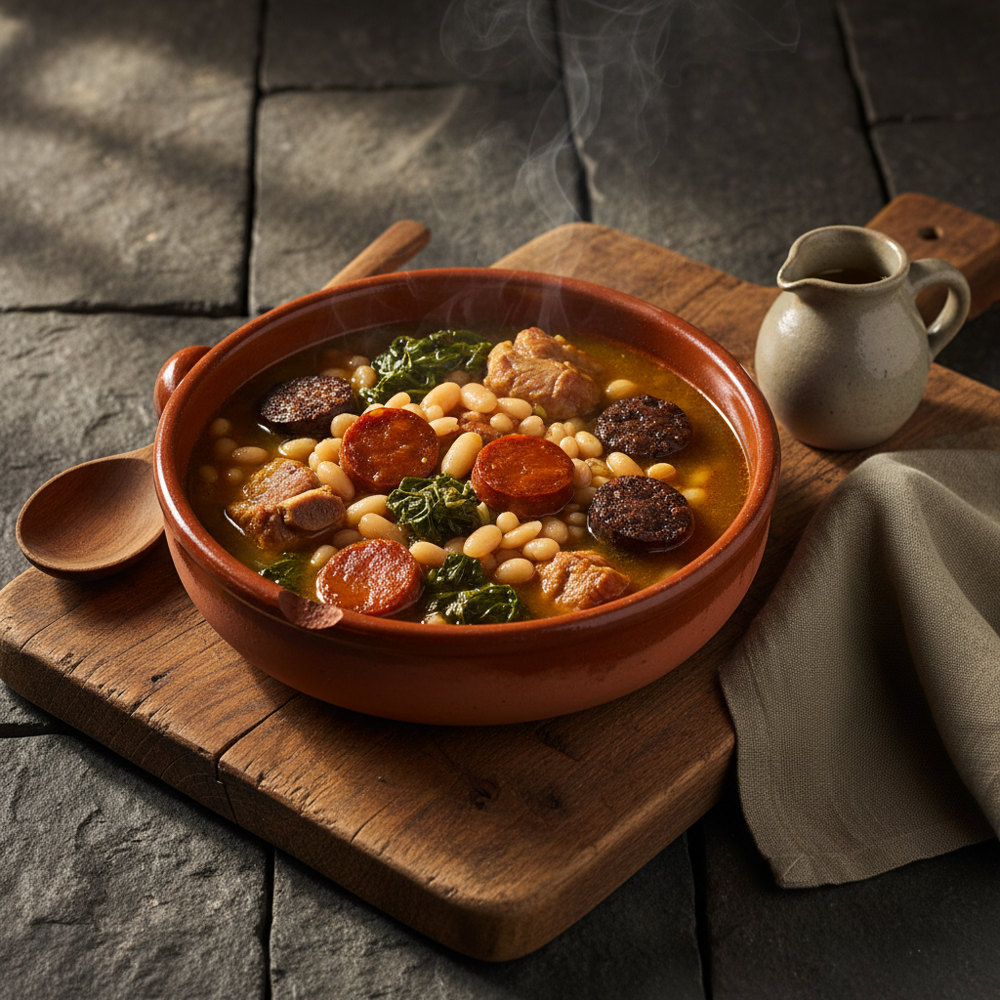
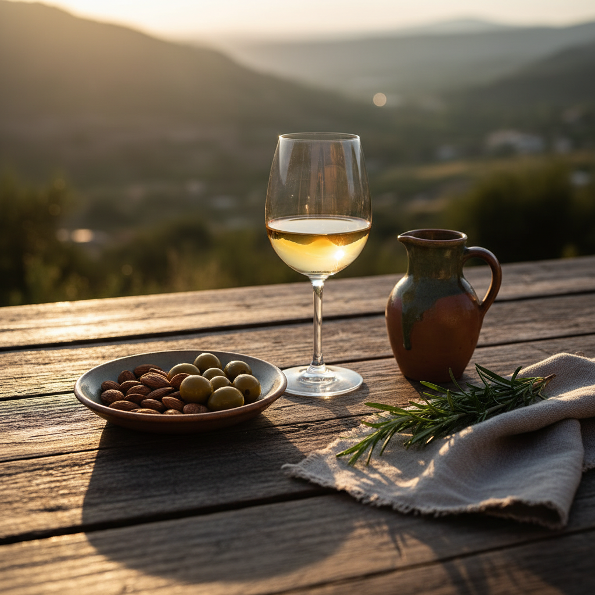
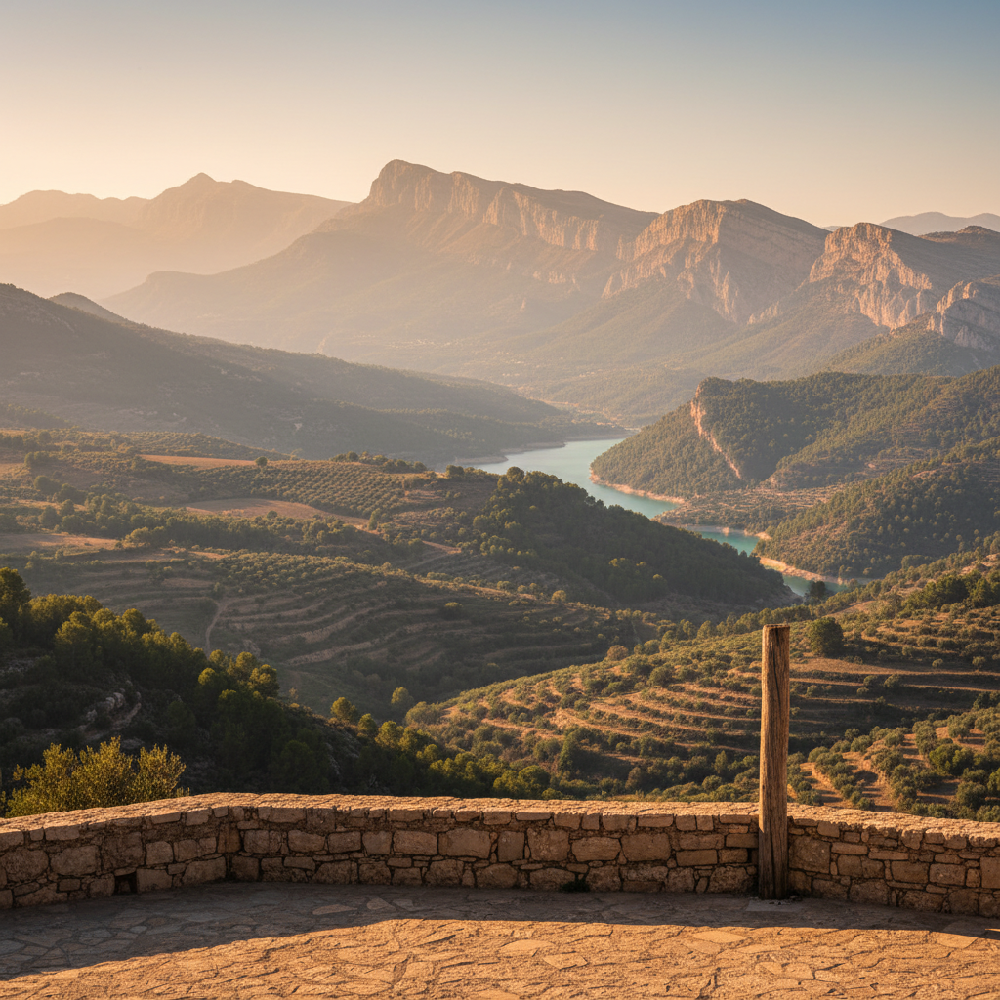

En el kilómetro 2 de la carretera a Guadalest, una sala con vistas al valle, a la sierra de Bernia y, los días claros, al mar. Arroces al horno, olleta de blat y los platos del interior valenciano que aquí se hacen igual desde hace cuarenta años.
Hace cuatro décadas que Nou Salat abrió en el kilómetro 2 de la carretera entre Callosa d'en Sarrià y Guadalest. La sala mira al mismo valle, las recetas siguen el mismo orden y los arroces salen del mismo horno de leña.
Cocina valenciana del interior, sin invención y sin discurso: olleta los días fríos, arroz al horno los domingos, cordero cuando toca. Y una mesa larga al fondo de la sala para los que vienen en grupo.

Sala principal · Vista al valle de GuadalestTres platos que resumen lo que es Nou Salat. Recetas valencianas del interior, hechas con tiempo y con la materia prima del valle.

Arroz, garbanzos, costilla, morcilla, tomate y la cabeza de ajos en el centro. Cazuela de barro al horno hasta que el arroz se asienta y se dora por arriba.

Trigo pelado, alubias, embutido del valle y verduras. Un cocido valenciano de invierno que se hace despacio y se sirve caliente, como se ha servido siempre.

Almendra del valle, aceite de la sierra, embutido propio y un vaso de vino blanco fresco. Lo que se pone en la mesa antes de empezar.

Estamos a la salida del Castell de Guadalest, en el km 2 de la carretera hacia Callosa. La sala está orientada al sur: a un lado, la silueta de la sierra de Aitana; al otro, las primeras estribaciones de la Bernia. En el medio, el valle.
En días claros el mar se ve desde la mesa.
Una sala con capacidad para grupos grandes y un menú cerrado que se trabaja con tiempo. Familias del valle, comidas de empresa de la Marina Baixa, y la sobremesa larga que pide la montaña.
Reservas con antelación para que la cocina pueda preparar los arroces y la olleta como tienen que prepararse: sin prisa.
Pedir presupuestoLlámanos para reservar mesa, consultar disponibilidad de grupos o pedir el menú del día.
Llamar al restaurante